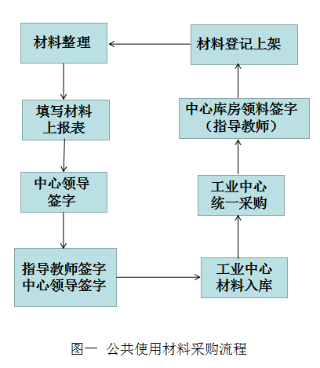

材料
交大创客空间的材料分为自由使用材料和项目支持材料。
公共使用材料
公共使用材料是可以自由取用的材料，材料摆放在创客空间各区域的自由材料取，取用无需审核，但希望秉承理性节约理念，共同保持社区可持续发展。
公共使用材料由创客协会管理，每天值班人员需要整理材料，如果材料不足，按照“图一、公共使用材料采购流程”申报领取。
电子：电阻，电容，电感，三极管，各类芯片，各类舵机电机，各类传感器
机械：标准件
设计：亚克力，木板
项目支持材料
项目支持材料是需要通过项目来获得支持的材料，使用需要通过项目申请来获得。材料也有项目组自己管理。
开源硬件：arduino，树莓派，edison，oneNet开发板，stm32
其他特殊材料
材料购买小提示
机械类：万贯五金机电城，**宝
电子类：城隍庙，**宝
亚克力：广告店，**宝
木材：府河建材市场，**宝
很难买到的：**宝